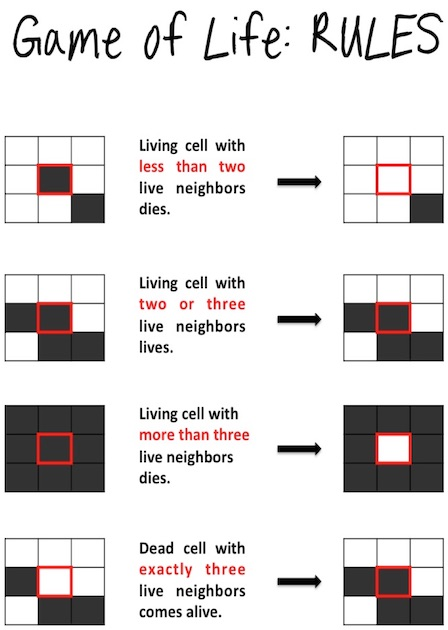
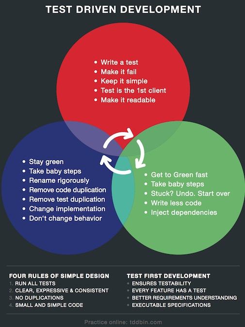
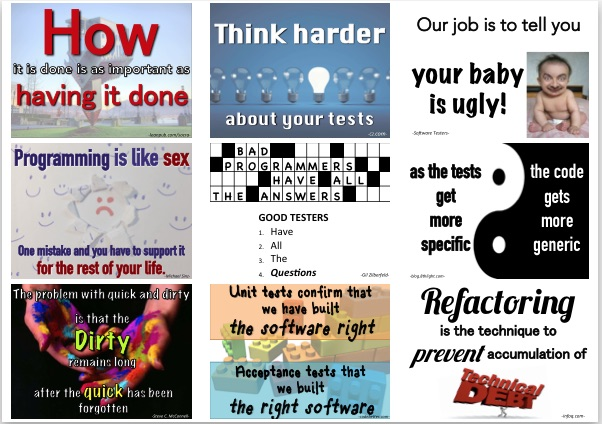

A couple of assets have piled up over time. See some nice pictures from previous JSCRs where we use printouts of the things below.

At the Munich JSCR we have print outs of this
beautiful picture. It explains the four Game of Life rules.
If you print it out on a A4 sheet you can nicely fold it in the middle
and will have the a nice graphic explaining the TDD cycle on the other site.
Created by Irene De Nicolo

Feel free to print out the TDD poster and hang it on the walls in the room where
the participants can learn and investigate about TDD and some details.
Created by Toni Klein

See in the pictures we made at various JSCRs
how the quotes make up some nice flag-kinda things hanging in the room and offer some nice
short-term entertainments.
Created by Irene De Nicolo